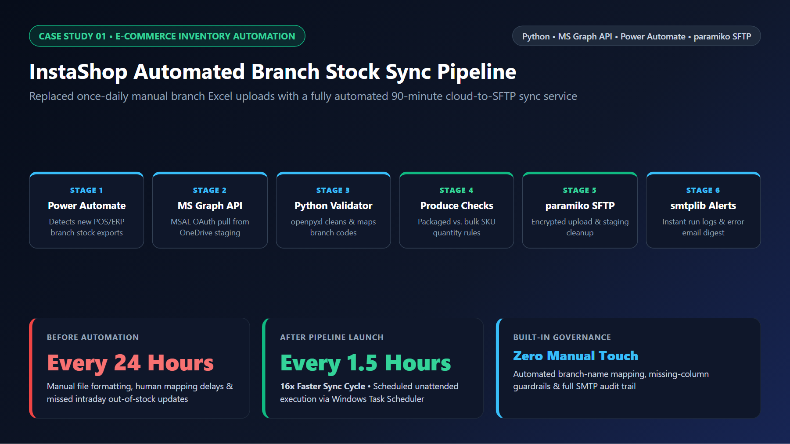

CS-01 • Python, MS Graph API (MSAL), Power Automate, openpyxl, SFTP (paramiko), smtplib
InstaShop 1.5-Hour Automated Inventory Sync Pipeline
What It Is: An unattended cloud-to-SFTP automation service that keeps branch product availability updated on InstaShop every 90 minutes.
Problem: Manual once-daily branch Excel uploads created stale stock listings, manual formatting work, and delayed out-of-stock updates.
Solution: Built a Power Automate + MS Graph API (MSAL) -> Python (openpyxl) branch-code validator -> paramiko SFTP pipeline with OneDrive staging cleanup, packaged vs. bulk produce checks, and smtplib error/log email alerts.
Impact: Cut sync cycle time from 24 hours to 1.5 hours (16x faster refresh) and eliminated manual spreadsheet uploads completely.